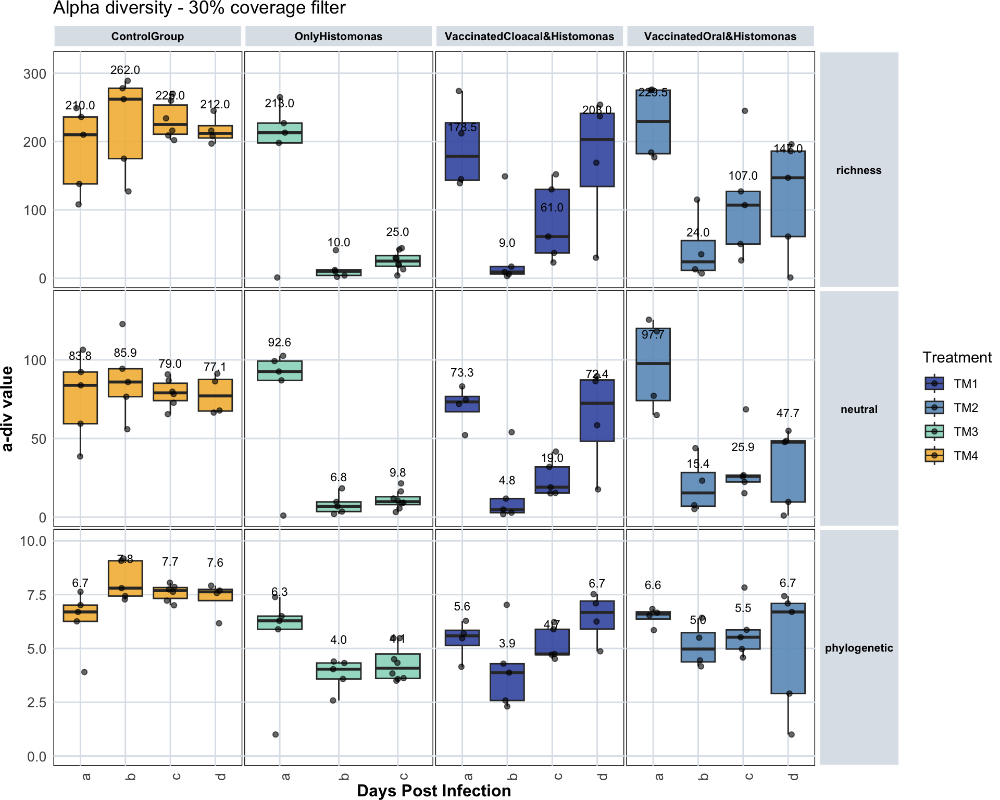
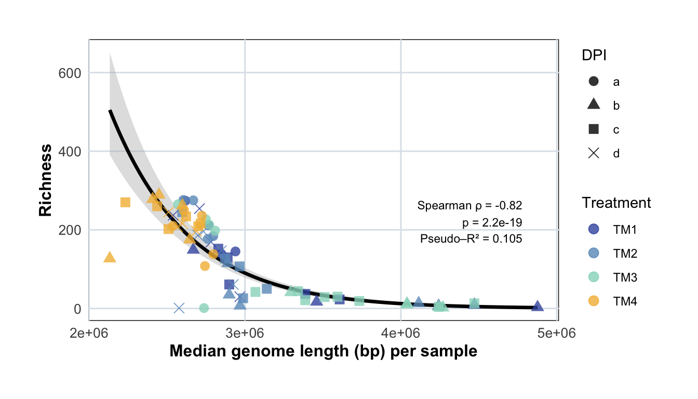
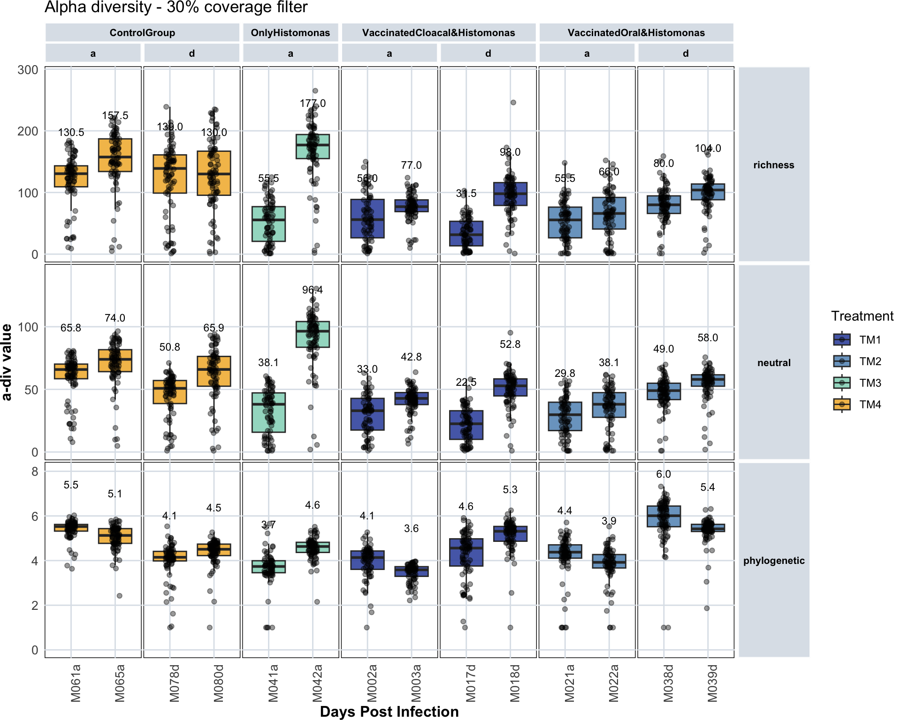
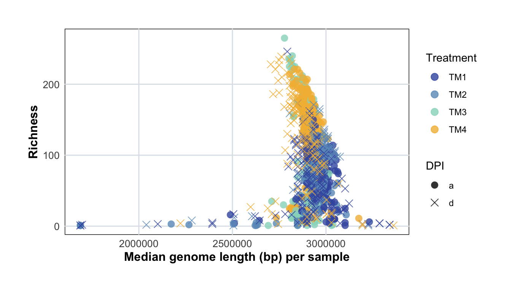

14 Alpha Diversity
load("data/macro/sample_metadata.Rdata")
load("data/macro/counts.Rdata")
load("data/micro/sample_metadata.Rdata")
load("data/micro/counts.Rdata")
load("data/MAG_catalogue/data.Rdata")
load("data/data_colors.Rdata")14.1 Prepare tidy tables for plotting
14.1.1 Alpha diversity tidy tables
Create tidy table for alpha diversity (micro)
tidy_plot_alpha_diversity_genomes <- plot_data_stats %>%
pivot_longer(
cols = c(richness, neutral, phylogenetic),
names_to = "metric",
values_to = "value"
) %>%
mutate(metric = factor(metric, levels = c("richness", "neutral", "phylogenetic")))Create tidy table for alpha diversity (macro)
14.1.2 Genome counts tidy tables
Create tidy tables for filtered genome counts (micro)
tidy_plot_genome_counts_filt_30_closed <- genome_counts_filt_30 %>%
mutate_at(vars(-genome), ~ . / sum(.)) %>%
pivot_longer(-genome, names_to = "microsample", values_to = "count") %>%
left_join(genome_metadata, by = join_by(genome == genome)) %>%
left_join(sample_metadata, by = join_by(microsample == microsample)) %>%
left_join(final_combined_stats, by = join_by(microsample == microsample)) %>%
mutate(section = unlist(section)) %>%
filter(count > 0) %>%
mutate(phylum = factor(phylum, levels = phylum_level_vector),
order = factor(order, levels = order_level_vector))Create tidy tables for filtered genome counts (macro)
tidy_plot_genome_counts_filt_30_macro_closed <- genome_counts_macro_filt_30 %>%
mutate_at(vars(-genome), ~ . / sum(.)) %>%
pivot_longer(-genome, names_to = "microsample", values_to = "count") %>%
left_join(genome_metadata, by = join_by(genome == genome)) %>%
left_join(sample_metadata_macro, by = join_by(microsample == sample)) %>%
filter(count > 0) %>%
mutate(phylum = factor(phylum, levels = phylum_level_vector),
order = factor(order, levels = order_level_vector))14.2 Macro-samples
14.2.1 Alpha-div
var <- "value"
summary_stats <- tidy_plot_alpha_diversity_genomes_macro %>%
filter(type_simple == "P") %>%
# filter(filter_level == 'filtered_30') %>%
filter(filter_status == "Retained by filtering") %>% # to remove empty samples
group_by(treatment_expl, age_category, metric) %>%
summarise(
median = median(.data[[var]], na.rm = TRUE),
IQR = IQR(.data[[var]], na.rm = TRUE),
Q1 = quantile(.data[[var]], 0.25, na.rm = TRUE),
Q3 = quantile(.data[[var]], 0.75, na.rm = TRUE)
) %>%
mutate(label_txt = formatC(median, format = "f", digits = 1)) #format(median, scientific = TRUE, digits = 5))
knitr::kable(summary_stats)| treatment_expl | age_category | metric | median | IQR | Q1 | Q3 | label_txt |
|---|---|---|---|---|---|---|---|
| ControlGroup | a | richness | 210.000000 | 98.0000000 | 138.000000 | 236.000000 | 210.0 |
| ControlGroup | a | neutral | 83.811909 | 32.8752555 | 59.397392 | 92.272648 | 83.8 |
| ControlGroup | a | phylogenetic | 6.696391 | 0.7547965 | 6.258387 | 7.013183 | 6.7 |
| ControlGroup | b | richness | 262.000000 | 103.0000000 | 175.000000 | 278.000000 | 262.0 |
| ControlGroup | b | neutral | 85.913403 | 17.7706682 | 76.580196 | 94.350864 | 85.9 |
| ControlGroup | b | phylogenetic | 7.801862 | 1.6404552 | 7.433081 | 9.073536 | 7.8 |
| ControlGroup | c | richness | 225.000000 | 42.7500000 | 210.750000 | 253.500000 | 225.0 |
| ControlGroup | c | neutral | 79.011578 | 11.0493141 | 74.089534 | 85.138848 | 79.0 |
| ControlGroup | c | phylogenetic | 7.686419 | 0.5045590 | 7.324135 | 7.828694 | 7.7 |
| ControlGroup | d | richness | 212.000000 | 18.0000000 | 205.250000 | 223.250000 | 212.0 |
| ControlGroup | d | neutral | 77.070687 | 20.1219134 | 67.456909 | 87.578822 | 77.1 |
| ControlGroup | d | phylogenetic | 7.630725 | 0.5222967 | 7.222578 | 7.744874 | 7.6 |
| OnlyHistomonas | a | richness | 213.000000 | 29.0000000 | 198.000000 | 227.000000 | 213.0 |
| OnlyHistomonas | a | neutral | 92.572615 | 12.2730843 | 86.960644 | 99.233728 | 92.6 |
| OnlyHistomonas | a | phylogenetic | 6.284060 | 0.6118000 | 5.889814 | 6.501614 | 6.3 |
| OnlyHistomonas | b | richness | 10.000000 | 8.0000000 | 4.000000 | 12.000000 | 10.0 |
| OnlyHistomonas | b | neutral | 6.828946 | 6.1434774 | 3.533646 | 9.677124 | 6.8 |
| OnlyHistomonas | b | phylogenetic | 4.036856 | 0.7414506 | 3.582019 | 4.323469 | 4.0 |
| OnlyHistomonas | c | richness | 25.000000 | 15.5000000 | 17.500000 | 33.000000 | 25.0 |
| OnlyHistomonas | c | neutral | 9.820644 | 5.0179333 | 7.941182 | 12.959115 | 9.8 |
| OnlyHistomonas | c | phylogenetic | 4.084129 | 1.1346151 | 3.609400 | 4.744015 | 4.1 |
| VaccinatedCloacal&Histomonas | a | richness | 178.500000 | 84.0000000 | 143.500000 | 227.500000 | 178.5 |
| VaccinatedCloacal&Histomonas | a | neutral | 73.283154 | 9.7468985 | 66.995456 | 76.742355 | 73.3 |
| VaccinatedCloacal&Histomonas | a | phylogenetic | 5.584873 | 0.7026976 | 5.141251 | 5.843949 | 5.6 |
| VaccinatedCloacal&Histomonas | b | richness | 9.000000 | 11.0000000 | 6.000000 | 17.000000 | 9.0 |
| VaccinatedCloacal&Histomonas | b | neutral | 4.805473 | 8.9287820 | 2.829573 | 11.758355 | 4.8 |
| VaccinatedCloacal&Histomonas | b | phylogenetic | 3.877432 | 1.7102515 | 2.580326 | 4.290578 | 3.9 |
| VaccinatedCloacal&Histomonas | c | richness | 61.000000 | 93.0000000 | 37.000000 | 130.000000 | 61.0 |
| VaccinatedCloacal&Histomonas | c | neutral | 19.031655 | 16.5854099 | 15.355569 | 31.940978 | 19.0 |
| VaccinatedCloacal&Histomonas | c | phylogenetic | 4.742644 | 1.1812226 | 4.708435 | 5.889657 | 4.7 |
| VaccinatedCloacal&Histomonas | d | richness | 203.000000 | 107.0000000 | 134.250000 | 241.250000 | 203.0 |
| VaccinatedCloacal&Histomonas | d | neutral | 72.419728 | 38.9935100 | 48.231406 | 87.224916 | 72.4 |
| VaccinatedCloacal&Histomonas | d | phylogenetic | 6.672006 | 1.3006379 | 5.902491 | 7.203129 | 6.7 |
| VaccinatedOral&Histomonas | a | richness | 229.500000 | 93.0000000 | 182.250000 | 275.250000 | 229.5 |
| VaccinatedOral&Histomonas | a | neutral | 97.656057 | 45.8913381 | 74.102555 | 119.993893 | 97.7 |
| VaccinatedOral&Histomonas | a | phylogenetic | 6.598823 | 0.3352976 | 6.366943 | 6.702240 | 6.6 |
| VaccinatedOral&Histomonas | b | richness | 24.000000 | 43.5000000 | 11.500000 | 55.000000 | 24.0 |
| VaccinatedOral&Histomonas | b | neutral | 15.375341 | 21.4031885 | 6.951692 | 28.354880 | 15.4 |
| VaccinatedOral&Histomonas | b | phylogenetic | 4.971620 | 1.3565209 | 4.374426 | 5.730947 | 5.0 |
| VaccinatedOral&Histomonas | c | richness | 107.000000 | 77.0000000 | 50.000000 | 127.000000 | 107.0 |
| VaccinatedOral&Histomonas | c | neutral | 25.883164 | 4.3196914 | 22.355050 | 26.674741 | 25.9 |
| VaccinatedOral&Histomonas | c | phylogenetic | 5.519981 | 0.8902031 | 4.972761 | 5.862964 | 5.5 |
| VaccinatedOral&Histomonas | d | richness | 147.000000 | 125.0000000 | 61.000000 | 186.000000 | 147.0 |
| VaccinatedOral&Histomonas | d | neutral | 47.675856 | 38.8252638 | 9.642039 | 48.467303 | 47.7 |
| VaccinatedOral&Histomonas | d | phylogenetic | 6.695277 | 4.1891537 | 2.902256 | 7.091409 | 6.7 |
plot_alpha_div_macro <- tidy_plot_alpha_diversity_genomes_macro %>%
filter(type_simple == "P") %>%
filter(filter_level == 'filtered_30') %>%
filter(filter_status == "Retained by filtering") %>% # to remove empty samples
ggplot(aes(x = age_category, y = value, fill = treatment)) +
geom_boxplot(outlier.shape = NA, alpha = 0.9) +
scale_fill_manual(name = "Treatment",
breaks = names(treatment_colours_bright),
values = treatment_colours_bright) +
geom_jitter(width = 0.1, alpha = 0.6) +
facet_nested(metric ~ treatment_expl, scales = "free", space = "fixed") +
# geom_text(aes(label = animal),
# position = position_jitter(width = 0.2, height = 0),
# size = 3.0, alpha = 0.7, check_overlap = TRUE, color="#8c1c47") +
labs(x = "Days Post Infection", y = "a-div value") +
scale_y_continuous(expand = expansion(mult = c(0.05, 0.15))) +
geom_text(
data = summary_stats,
aes(x = age_category, y = median, label = label_txt),
inherit.aes = FALSE,
vjust = -3.0,
size = 3, alpha = 1, color = "black") +
expand_limits(y = 0) +
theme_minimal() +
custom_ggplot_theme +
theme(axis.text.x = element_text(angle = 90, hjust = 1),
plot.margin = margin(0.2, 0.2, 0.2, 0.2)) +
ggtitle("Alpha diversity - 30% coverage filter")
plot_alpha_div_macro
14.2.2 Alpha-div vs genome size
tidy_plot_genome_counts_filt_30_macro_closed_zerosrem <- tidy_plot_genome_counts_filt_30_macro_closed %>%
filter(count > 0)
median_lengths <- tidy_plot_genome_counts_filt_30_macro_closed_zerosrem %>%
group_by(microsample) %>%
summarise(median_genome_length = median(length, na.rm = TRUE), .groups = "drop")
alpha_div_macro_filtered_30_gen_length <- alpha_div_macro_filtered_30 %>%
left_join(median_lengths, by = join_by(microsample == microsample)) %>%
left_join(sample_metadata_macro, by = join_by(microsample == sample)) %>%
filter(treatment != "TM0")
alpha_div_macro_filtered_30_gen_length <- plot_data_stats_macro %>%
filter(type_simple == "P") %>%
filter(filter_level == "filtered_30") %>%
left_join(median_lengths, by = join_by(microsample == microsample)) %>%
filter(treatment != "TM0") %>%
filter(filter_status == "Retained by filtering")# alpha_div_macro_filtered_30_gen_length %>%
# ggplot(aes(x = median_genome_length, y = richness, color = treatment, shape = factor(age_category))) +
# geom_point(size = 3, alpha = 0.8) +
# geom_smooth(method = "lm", se = TRUE, aes(group = 1), color = "black", linewidth = 1) +
# scale_color_manual(values = treatment_colours_bright, name = "Treatment") +
# scale_shape_manual(
# name = "DPI",
# values = c("a" = 16, "b" = 17, "c" = 15, "d" = 4) # Example shapes
# ) +
# labs(x = "Median genome length (bp) per sample", y = "Richness") +
# ylim(c(-5,300)) +
# theme_minimal() +
# custom_ggplot_theme # Fit model
model_nb <- glm.nb(richness ~ median_genome_length,
data = alpha_div_macro_filtered_30_gen_length)
# Fit null model (intercept only)
model_null <- glm.nb(richness ~ 1,
data = alpha_div_macro_filtered_30_gen_length)
# Manual McFadden pseudo-R²
pseudo_r2 <- 1 - (logLik(model_nb) / logLik(model_null))
pseudo_r2'log Lik.' 0.1045218 (df=3)# Spearman correlation
cor_test <- cor.test(
~ richness + median_genome_length,
data = alpha_div_macro_filtered_30_gen_length,
method = "spearman"
)
rho <- cor_test$estimate
pval <- cor_test$p.value
# Create new data for prediction
newdata <- data.frame(
median_genome_length = seq(
min(alpha_div_macro_filtered_30_gen_length$median_genome_length, na.rm = TRUE),
max(alpha_div_macro_filtered_30_gen_length$median_genome_length, na.rm = TRUE),
length.out = 200
)
)
# Get predictions + SE on link scale
pred <- predict(model_nb, newdata, type = "link", se.fit = TRUE)
# Add predicted values to newdata (back-transform with exp)
newdata$fit <- exp(pred$fit)
newdata$lwr <- exp(pred$fit - 1.96 * pred$se.fit) # 95% CI lower
newdata$upr <- exp(pred$fit + 1.96 * pred$se.fit) # 95% CI upper
x_pos <- max(alpha_div_macro_filtered_30_gen_length$median_genome_length, na.rm = TRUE) * 0.98
y_pos <- max(alpha_div_macro_filtered_30_gen_length$richness, na.rm = TRUE) * 0.95
# Plot with fitted NB curve
ggplot(alpha_div_macro_filtered_30_gen_length,
aes(x = median_genome_length, y = richness)) +
# NB fit + CI
geom_ribbon(data = newdata,
aes(x = median_genome_length, ymin = lwr, ymax = upr),
fill = "grey70", alpha = 0.4, inherit.aes = FALSE) +
geom_line(data = newdata,
aes(x = median_genome_length, y = fit),
color = "black", linewidth = 1.2, inherit.aes = FALSE) +
geom_point(aes(color = treatment, shape = factor(age_category)),
size = 3, alpha = 0.8) +
# ➊ Spearman rho + p-value
annotate("text",
x = x_pos, y = y_pos,
label = paste0("Spearman ρ = ", round(rho, 2),
"\np = ", signif(pval, 2)),
hjust = 1, vjust = 1, size = 3) +
# ➋ Pseudo-R²
annotate("text",
x = x_pos, y = y_pos * 0.85,
label = paste0("\nPseudo–R² = ", round(pseudo_r2, 3)),
hjust = 1, vjust = 1, size = 3) +
scale_color_manual(values = treatment_colours_bright, name = "Treatment") +
scale_shape_manual(name = "DPI",
values = c("a" = 16, "b" = 17, "c" = 15, "d" = 4)) +
labs(x = "Median genome length (bp) per sample", y = "Richness") +
theme_minimal() +
custom_ggplot_theme
14.3 Micro-samples
14.3.1 Alpha diversity
var <- "value"
summary_stats <- tidy_plot_alpha_diversity_genomes %>%
filter(type_simple == "P") %>%
# filter(filter_level == 'filtered_30') %>%
filter(filter_status == "Retained by filtering") %>% # to remove empty samples
group_by(treatment_expl, age_category, metric, animal) %>%
summarise(
median = median(.data[[var]], na.rm = TRUE),
IQR = IQR(.data[[var]], na.rm = TRUE),
Q1 = quantile(.data[[var]], 0.25, na.rm = TRUE),
Q3 = quantile(.data[[var]], 0.75, na.rm = TRUE)
) %>%
mutate(label_txt = formatC(median, format = "f", digits = 1)) #format(median, scientific = TRUE, digits = 5))
knitr::kable(summary_stats)| treatment_expl | age_category | metric | animal | median | IQR | Q1 | Q3 | label_txt |
|---|---|---|---|---|---|---|---|---|
| ControlGroup | a | richness | M061a | 130.500000 | 34.0000000 | 109.250000 | 143.250000 | 130.5 |
| ControlGroup | a | richness | M065a | 157.500000 | 53.0000000 | 134.000000 | 187.000000 | 157.5 |
| ControlGroup | a | neutral | M061a | 65.845900 | 11.6891430 | 58.483977 | 70.173120 | 65.8 |
| ControlGroup | a | neutral | M065a | 73.967935 | 17.5288031 | 64.139521 | 81.668324 | 74.0 |
| ControlGroup | a | phylogenetic | M061a | 5.525477 | 0.2984958 | 5.320437 | 5.618932 | 5.5 |
| ControlGroup | a | phylogenetic | M065a | 5.127197 | 0.6600657 | 4.771212 | 5.431278 | 5.1 |
| ControlGroup | d | richness | M078d | 139.000000 | 62.0000000 | 99.000000 | 161.000000 | 139.0 |
| ControlGroup | d | richness | M080d | 130.000000 | 71.5000000 | 95.500000 | 167.000000 | 130.0 |
| ControlGroup | d | neutral | M078d | 50.816185 | 18.3957608 | 38.670258 | 57.066019 | 50.8 |
| ControlGroup | d | neutral | M080d | 65.907097 | 23.7889916 | 52.513692 | 76.302684 | 65.9 |
| ControlGroup | d | phylogenetic | M078d | 4.148053 | 0.4284805 | 3.983931 | 4.412412 | 4.1 |
| ControlGroup | d | phylogenetic | M080d | 4.507315 | 0.5140530 | 4.223553 | 4.737606 | 4.5 |
| OnlyHistomonas | a | richness | M041a | 55.500000 | 56.2500000 | 20.750000 | 77.000000 | 55.5 |
| OnlyHistomonas | a | richness | M042a | 177.000000 | 39.0000000 | 155.000000 | 194.000000 | 177.0 |
| OnlyHistomonas | a | neutral | M041a | 38.101501 | 31.3992176 | 15.789598 | 47.188815 | 38.1 |
| OnlyHistomonas | a | neutral | M042a | 96.412950 | 20.5186346 | 83.608790 | 104.127425 | 96.4 |
| OnlyHistomonas | a | phylogenetic | M041a | 3.736384 | 0.5362499 | 3.456220 | 3.992470 | 3.7 |
| OnlyHistomonas | a | phylogenetic | M042a | 4.631626 | 0.4538228 | 4.365442 | 4.819264 | 4.6 |
| VaccinatedCloacal&Histomonas | a | richness | M002a | 56.000000 | 62.2500000 | 26.500000 | 88.750000 | 56.0 |
| VaccinatedCloacal&Histomonas | a | richness | M003a | 77.000000 | 19.0000000 | 69.000000 | 88.000000 | 77.0 |
| VaccinatedCloacal&Histomonas | a | neutral | M002a | 32.958140 | 25.2620550 | 17.536660 | 42.798715 | 33.0 |
| VaccinatedCloacal&Histomonas | a | neutral | M003a | 42.785067 | 9.5763010 | 37.868745 | 47.445046 | 42.8 |
| VaccinatedCloacal&Histomonas | a | phylogenetic | M002a | 4.136386 | 0.8227032 | 3.607391 | 4.430094 | 4.1 |
| VaccinatedCloacal&Histomonas | a | phylogenetic | M003a | 3.586387 | 0.4317854 | 3.295357 | 3.727143 | 3.6 |
| VaccinatedCloacal&Histomonas | d | richness | M017d | 31.500000 | 39.7500000 | 13.500000 | 53.250000 | 31.5 |
| VaccinatedCloacal&Histomonas | d | richness | M018d | 98.000000 | 37.0000000 | 79.000000 | 116.000000 | 98.0 |
| VaccinatedCloacal&Histomonas | d | neutral | M017d | 22.539126 | 22.8242044 | 10.113384 | 32.937588 | 22.5 |
| VaccinatedCloacal&Histomonas | d | neutral | M018d | 52.806886 | 13.5884550 | 44.781267 | 58.369722 | 52.8 |
| VaccinatedCloacal&Histomonas | d | phylogenetic | M017d | 4.559298 | 1.2170197 | 3.757188 | 4.974207 | 4.6 |
| VaccinatedCloacal&Histomonas | d | phylogenetic | M018d | 5.312937 | 0.6620478 | 4.867675 | 5.529723 | 5.3 |
| VaccinatedOral&Histomonas | a | richness | M021a | 55.500000 | 49.7500000 | 26.500000 | 76.250000 | 55.5 |
| VaccinatedOral&Histomonas | a | richness | M022a | 66.000000 | 51.2500000 | 40.750000 | 92.000000 | 66.0 |
| VaccinatedOral&Histomonas | a | neutral | M021a | 29.763472 | 22.6535874 | 17.093991 | 39.747579 | 29.8 |
| VaccinatedOral&Histomonas | a | neutral | M022a | 38.110138 | 19.6758541 | 27.710731 | 47.386586 | 38.1 |
| VaccinatedOral&Histomonas | a | phylogenetic | M021a | 4.377165 | 0.5961356 | 4.108973 | 4.705109 | 4.4 |
| VaccinatedOral&Histomonas | a | phylogenetic | M022a | 3.921068 | 0.6018992 | 3.668648 | 4.270547 | 3.9 |
| VaccinatedOral&Histomonas | d | richness | M038d | 80.000000 | 28.5000000 | 66.000000 | 94.500000 | 80.0 |
| VaccinatedOral&Histomonas | d | richness | M039d | 104.000000 | 25.5000000 | 88.250000 | 113.750000 | 104.0 |
| VaccinatedOral&Histomonas | d | neutral | M038d | 49.006582 | 13.0411587 | 41.853412 | 54.894570 | 49.0 |
| VaccinatedOral&Histomonas | d | neutral | M039d | 57.961846 | 9.0889236 | 52.534251 | 61.623175 | 58.0 |
| VaccinatedOral&Histomonas | d | phylogenetic | M038d | 6.008672 | 0.9258856 | 5.516224 | 6.442110 | 6.0 |
| VaccinatedOral&Histomonas | d | phylogenetic | M039d | 5.421190 | 0.3200240 | 5.303203 | 5.623227 | 5.4 |
plot_alpha_div_micro <- tidy_plot_alpha_diversity_genomes %>%
filter(type_simple == "P") %>%
filter(filter_level == 'filtered_30') %>%
filter(filter_status == "Retained by filtering") %>% # to remove empty samples
ggplot(aes(x = animal, y = value, fill = treatment)) +
geom_boxplot(outlier.shape = NA, alpha = 0.9) +
scale_fill_manual(name = "Treatment",
breaks = names(treatment_colours_bright),
values = treatment_colours_bright) +
geom_jitter(width = 0.1, alpha = 0.4) +
facet_nested(metric ~ treatment_expl + age_category, scales = "free", space = "fixed") +
# geom_text(aes(label = animal),
# position = position_jitter(width = 0.2, height = 0),
# size = 3.0, alpha = 0.7, check_overlap = TRUE, color="#8c1c47") +
labs(x = "Days Post Infection", y = "a-div value") +
scale_y_continuous(expand = expansion(mult = c(0.05, 0.15))) +
geom_text(
data = summary_stats,
aes(x = animal, y = median, label = label_txt),
inherit.aes = FALSE,
vjust = -5.0,
size = 3, alpha = 1, color = "black") +
expand_limits(y = 0) +
theme_minimal() +
custom_ggplot_theme +
theme(axis.text.x = element_text(angle = 90, hjust = 1),
plot.margin = margin(0.2, 0.2, 0.2, 0.2)) +
ggtitle("Alpha diversity - 30% coverage filter")
plot_alpha_div_micro
14.3.2 Alpha-div vs genome size
tidy_plot_genome_counts_filt_30_closed_zerosrem <- tidy_plot_genome_counts_filt_30_closed %>%
filter(count > 0)
median_lengths <- tidy_plot_genome_counts_filt_30_closed_zerosrem %>%
group_by(microsample) %>%
summarise(median_genome_length = median(length, na.rm = TRUE), .groups = "drop")
alpha_div_filtered_30_gen_length <- plot_data_stats %>%
filter(type_simple == "P") %>%
filter(filter_level == "filtered_30") %>%
left_join(median_lengths, by = join_by(microsample == microsample)) %>%
filter(treatment != "TM0") %>%
filter(filter_status == "Retained by filtering") #%>%
#filter(richness >10)alpha_div_filtered_30_gen_length %>%
ggplot(aes(x = median_genome_length, y = richness, color = treatment, shape = factor(age_category))) +
geom_point(size = 3, alpha = 0.8) +
# geom_smooth(method = "lm", se = TRUE, aes(group = 1), color = "black", linewidth = 1) +
scale_color_manual(values = treatment_colours_bright, name = "Treatment") +
scale_shape_manual(
name = "DPI",
values = c("a" = 16, "b" = 17, "c" = 15, "d" = 4) # Example shapes
) +
labs(x = "Median genome length (bp) per sample", y = "Richness") +
# ylim(c(-5,300)) +
theme_minimal() +
custom_ggplot_theme 
#
# # Fit model
# model_nb <- glm.nb(richness ~ median_genome_length,
# data = alpha_div_filtered_30_gen_length)
#
# # Fit null model (intercept only)
# model_null <- glm.nb(richness ~ 1,
# data = alpha_div_filtered_30_gen_length)
#
# # Manual McFadden pseudo-R²
# pseudo_r2 <- 1 - (logLik(model_nb) / logLik(model_null))
# pseudo_r2
#
#
# # Spearman correlation
# cor_test <- cor.test(
# ~ richness + median_genome_length,
# data = alpha_div_filtered_30_gen_length,
# method = "spearman"
# )
#
# rho <- cor_test$estimate
# pval <- cor_test$p.value
#
#
# # Create new data for prediction
# newdata <- data.frame(
# median_genome_length = seq(
# min(alpha_div_filtered_30_gen_length$median_genome_length, na.rm = TRUE),
# max(alpha_div_filtered_30_gen_length$median_genome_length, na.rm = TRUE),
# length.out = 200
# )
# )
# # Get predictions + SE on link scale
# pred <- predict(model_nb, newdata, type = "link", se.fit = TRUE)
#
# # Add predicted values to newdata (back-transform with exp)
# newdata$fit <- exp(pred$fit)
# newdata$lwr <- exp(pred$fit - 1.96 * pred$se.fit) # 95% CI lower
# newdata$upr <- exp(pred$fit + 1.96 * pred$se.fit) # 95% CI upper
#
# x_pos <- max(alpha_div_filtered_30_gen_length$median_genome_length, na.rm = TRUE) * 0.98
# y_pos <- max(alpha_div_filtered_30_gen_length$richness, na.rm = TRUE) * 0.95
#
#
# # Plot with fitted NB curve
# ggplot(alpha_div_filtered_30_gen_length,
# aes(x = median_genome_length, y = richness)) +
# # NB fit + CI
# geom_ribbon(data = newdata,
# aes(x = median_genome_length, ymin = lwr, ymax = upr),
# fill = "grey70", alpha = 0.4, inherit.aes = FALSE) +
# geom_line(data = newdata,
# aes(x = median_genome_length, y = fit),
# color = "black", linewidth = 1.2, inherit.aes = FALSE) +
# geom_point(aes(color = treatment, shape = factor(age_category)),
# size = 3, alpha = 0.8) +
# # ➊ Spearman rho + p-value
# annotate("text",
# x = x_pos, y = y_pos,
# label = paste0("Spearman ρ = ", round(rho, 2),
# "\np = ", signif(pval, 2)),
# hjust = 1, vjust = 1, size = 3) +
#
# # ➋ Pseudo-R²
# annotate("text",
# x = x_pos, y = y_pos * 0.85,
# label = paste0("\nPseudo–R² = ", round(pseudo_r2, 3)),
# hjust = 1, vjust = 1, size = 3) +
#
# scale_color_manual(values = treatment_colours_bright, name = "Treatment") +
# scale_shape_manual(name = "DPI",
# values = c("a" = 16, "b" = 17, "c" = 15, "d" = 4)) +
# labs(x = "Median genome length (bp) per sample", y = "Richness") +
# theme_minimal() +
# custom_ggplot_theme